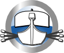

En tant que société de services nous sommes des utilisateurs de solutions open source à la fois pour nos outils internes et pour les produits que nous concevons.
Ce site nous permet de présenter ce que nous rendons à la communauté au travers de projets importants que nous avons réalisés sur nos fonds propres de R&D ou par des financements mixtes (contrats de recherche, industrialisation, maintenance…)
Notre positionnement sur des marchés à forte technologie nous permet de travailler sur des projets ambitieux motivants pour l’entreprise et pour les ingénieurs qui y participent. Ces pages Web reflètent cet objectif. Pour plus de renseignements sur Viveris et l’open source vous pouvez nous contacter.
Compression ROHCCompression d'entêtes réseau par l'implémentation du protocole ROHC. détails |
|
Plateforme OpenSANDPlateforme d'émulation satellite DVB-S/RCS. détails |
|
|  |
AuxramesSolution Web de gestion des affectations de plusieurs équipes. détails |
A l'avenir, d'autres logiciels seront publiés, ainsi que des réalisations électroniques.
Bon surf !